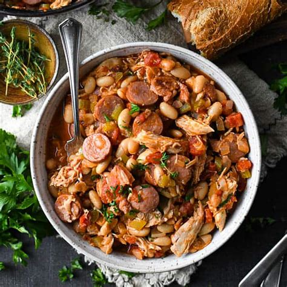
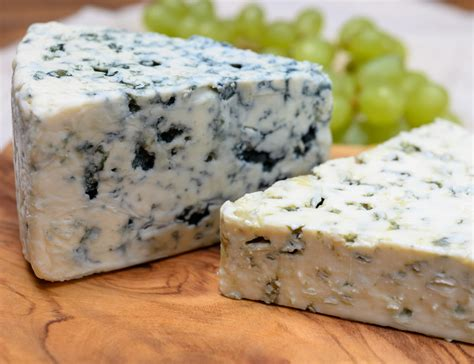
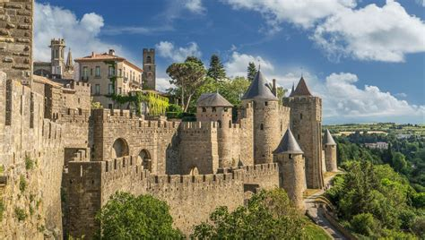
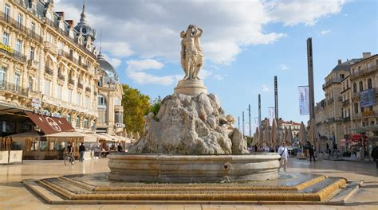

Occitanie
Overview
Occitanie, located in southern France, stretches from the Pyrenees mountains to the Mediterranean Sea. Known for its rich history, Roman architecture, and sunny climate, it includes vibrant cities like Toulouse and Montpellier.
Quick Facts
- Capital: Toulouse
- Regional Language: French (with Occitan dialects)
- Population: ~6 million
- Famous For: Aerospace industry, Roman ruins, vineyards
- Fun Fact: Toulouse is home to Airbus and is often called “La Ville Rose” (The Pink City) due to its terracotta bricks!
Popular Dishes
Cassoulet

Brandade de Nîmes

Fougasse

Roquefort Cheese

Famous Landmarks
Pont du Gard

Cité de Carcassonne

Canal du Midi

Toulouse Capitole

Montpellier Historic Center

Best Time to Visit
Spring (April–June) and early fall (September–October) are ideal for exploring Roman heritage and wine country. Summers are great for beach trips on the Mediterranean coast.
Regional Symbols
- Flag:
- Coat of arms: